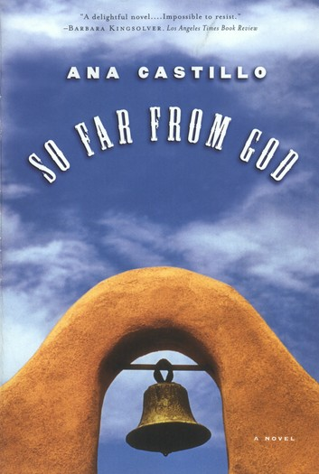

Cane
Here, you can revisit the book Cane by Jean Toomer. "A poet, playwright, and novelist, Toomer’s most famous work, Cane, was published in 1923 and was hailed by critics for its literary experimentation and portrayal of African-American characters and culture" - Poetry Foundation

So Far From God
Here, you can revisit the book So Far From God by Ana Castillo. So Far From God details the lives of women in Tome, New Mexico and discusses themes such as culture, religion, and gender.

There There
Here, you can revisit the book There There by Tommy Orange. Published in 2018, There There by Tommy Orange explores what it means to be Native American in the 21st Century"